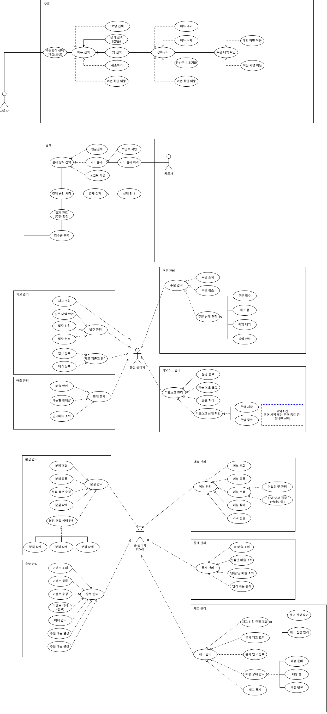

아이스크림 전문점 프랜차이즈 운영 효율화
실시간 가맹 재고 연동 기반 백그라운드 자동 입고 메커니즘, 본사 제어형 마케팅 프로모션 엔진, 그리고 다차원 데이터 분석 대시보드가 결합된 차세대 프랜차이즈 플랫폼 통합 아키텍처입니다.
01. 프로젝트 개요
고객용 무인 키오스크
작업 단계별 유기적 흐름 분기(용기 선택 ➔ 맛 선택 ➔ 추가 주문 이동 루틴) 및 Spring 언어 설정 연동 다국어 대응. 사용 직후 개인정보 확보용 세션 파기 시스템 내장.
- 미결제/결제완료/대기·픽업 실시간 상태 추적
- 유휴/종료 시 장바구니 강제 초기화 정책
지점별 매장 운영 (POS)
실시간 재고 기반 키오스크 품절 처리 동기화. 매장 규모에 따른 가용 제조 메뉴 수 노출 수량 유연 제어 및 본사 매칭형 5단계 자동 발주(입고 신청) 처리 보장.
- 잔량 3개 이하 시 백그라운드 자동 발주
- 본사-지점간 실시간 CS 메신저 인터페이스
본사 총괄 백오피스
전사 마케팅 일괄 수립용 프로모션 배포 엔진. 전사 메뉴 마스터 관리 및 지점 자동 동기화 배포, 신규 가맹점 라이선스 및 지점 계정 자동 생성 파이프라인 가동.
- 시간대 고객·맛별 매출 그래프 분석 피드
- 지점-고객 문의 통합 게시판 운영
Git 브랜치 전략 및 표준 아키텍처 명세
조별 협업의 형상 관리를 보장하는 엄격한 코드 병합 흐름 정책을 준수합니다.
02. 비즈니스 시스템 다이어그램 명세
비즈니스 플로우차트 (systemflow.jpg)
클릭 시 화면 최대화 (96vw)
• 조건 분기 및 옵션 선택 구간을 정형 마름모 도형으로 도식화 완료
요구 사항 기능 명세 (usecase.jpg)
클릭 시 화면 최대화 (96vw)
• 전체 행위자(소비자, 지점장, 본사) 간의 데이터 수명 주기 액션 포인트 정의 완료
03. 홍보 마케팅 데이터 구조 및 데이터 기반 전략
1. 이달의 맛 홍보 데이터
- • 이달의 맛 ID
- • 이달의 맛 이름
- • 맛 설명
- • 대표 이미지
- • 판매 시작일
- • 판매 종료일
- • 메뉴판 노출 순서
- • 판매 여부
2. 인기 맛 통계 데이터
- • 맛 ID
- • 맛 이름
- • 누적 판매량
- • 판매 순위
- • 최근 한 달 판매량
- • 인기 메뉴 TOP1~TOP5 정보
3. 구매 시간대 통계 데이터
- • 주문 ID
- • 주문 일시
- • 주문 시간대
- • 시간대별 주문 건수
- • 시간대별 매출액
- • 평균 주문 금액
4. 할인 이벤트 데이터
- • 이벤트 ID
- • 이벤트명
- • 할인 적용 시작 시간
- • 할인 적용 종료 시간
- • 할인율
- • 적용 대상 메뉴
- • 이벤트 활성화 여부
5. 룰렛 이벤트 데이터
- • 이벤트 ID / 이벤트명
- • 룰렛 보상 종류 / 당첨 확률
- • 당첨 인원 제한 / 하루 당첨 가능 인원
- • 이벤트 시작일 / 종료일 / 활성화 여부
마케팅 기대 효과
- 이달의 맛 우선 노출을 통한 신메뉴 홍보 강화
- 인기 메뉴 TOP5 제공을 통한 구매 결정 지원
- 비인기 시간대 할인 이벤트를 통한 매출 증대 및 고객 분산
- 룰렛 이벤트를 통한 고객 참여 유도 및 재방문율 증가
- 판매 데이터를 활용한 데이터 기반 마케팅 및 맞춤형 프로모션 제공
Figma 스마트 통계 분석 및 매출 요약 대시보드 (figmadata.png)
클릭 시 화면 최대화 (96vw)
04. 핵심 요구사항 명세서
1. 키오스크 & 결제 흐름
- 유기적 단계별 주문 라우팅 (컵 고르고 맛 고르고 장바구니 담기)의 단일 작업을 완전 수행한 뒤, 추가 주문을 진행할 때 다시 세션 컨텍스트를 유지한 채 메뉴 메인 화면으로 전환할 수 있는 '추가 주문 이동' 메커니즘 제공.
- 다음 사용자를 위한 세션 초기화 사용자가 결제를 정상 완료하거나 60초 유휴 임계치 타임아웃에 진입하는 경우, 다음 사용자의 정보 도용 방지 및 거래 안정성을 위해 장바구니 내역 및 사용자 세션을 완전 초기화(Reset) 조치.
- 다국어 스위칭 (i18n) Spring Boot LocaleResolver 인터셉터 구조 기술과 매핑하여 한국어/영어 메뉴 전격 변환 지원 기능 탑재.
2. 하드웨어 연동 및 주문 상태 제어
-
주문 수명 주기 추적 상태값 인젝션
영수증 출력 성공 유무 체크와 더불어, 주문서가 발급된 이후 주방과 매장 POS 단말에 연동되어
접수 -> 대기중 -> 픽업대기 -> 픽업완료상태를 고객 모니터에 실시간으로 표시하는 트래킹 API 반영. - 원자적(Atomicity) 트랜잭션 관리 결제 승인, 실시간 재고 차감, 영수증 프린터 전송 처리를 단일 비즈니스 트랜잭션으로 래핑. 물리 오류 시 전량 자동 롤백.
- 실시간 푸시 알림 FCM 및 Firebase Realtime 연동으로 점포 POS 단말기에 승인 주문 즉각 렌더링.
3. 지점별 재고 제어 & 자동 입고 발주
-
임계치 기반 백그라운드 자동 발주
아이스크림 가맹 매장 특성에 알맞게 벌크 잔여 수량이 3개 이하(
quantity <= 3)로 하향 임계치 도달 즉시 점주의 인지 없이도 시스템 백그라운드가 본사 중앙 물류 백오피스 단으로 자동 발주 내역을 인서트 처리함. - 매장 규모별 노출 메뉴 수 통제 분점 매장 평수 및 동선이 상이하여 대량 제조가 불가능한 매장의 경우 점포 POS 원격 스위치로 메뉴판 노출 상품 개수 한계를 동적으로 제한하는 가변 UI 스크립트 반영.
-
발주 상태 쌍방향 동기화 관제
자동 등록되거나 긴급 수동 접수된 발주서 상태(
신청 → 접수 → 배송준비 → 배송중 → 완료) 변동 사항을 본사와 가맹점이 실시간 동기화하여 투명한 상태 추적 구현.
05. 사용자별 기능 정의서
| ID | 대상 | 기능명 | 기능 정의 및 상세 설명 | 비즈니스 로직 및 예외 처리 정책 |
|---|---|---|---|---|
| U-001 | 소비자 | 메뉴판 단계적 라우팅 조회 | 수령(매장/포장) -> 용기(컵/콘) -> 규격별 맛 매핑 순차 조회를 제공하며 추가 유입용 이달의 맛 우선 노출 및 인기 TOP 배너 로딩 | 개별 단품 구성을 장바구니에 담은 이후 다시 뒤로 가기를 가동해도 이전 작업 세션 상태를 스택에 적재하여 중복 선택 무결성 보장. |
| U-002 | 소비자 | 장바구니 완결 & 룰렛 리워드 | 장바구니 내역의 원자적 결제 대금 처리 수행 및 결제 완료 로그 저장 직후 룰렛 휠 모달 컴포넌트 강제 핑 | 사용자가 완료 버튼을 터치하거나 무조작 60초 도과 타임아웃 감지 즉시 다음 유입자를 위해 영구 캐시 및 바스켓 완전 플러시 초기화 실행. |
| U-003 | 소비자 | 포인트 적립 및 다국어 대응 | 전화번호 기반 포인트 적립 기능 제공 및 Spring i18n 표준 명세 기준 글로벌 다국어 언어 팩 실시간 번역 스위칭 | LocaleResolver 인터셉터 바인딩 처리 정책 적용. 영문/국문 하드코딩을 배제한 프로퍼티 구조 파일 파싱 처리. |
| U-004 | 소비자 | 실시간 주문 라이프사이클 조회 | 결제 완결 주문의 수명 주기를 외부 KDS 디스플레이 모니터 단에 정형 시각화 피드로 출력 | 단순 완료 처리가 아닌 접수 ➔ 대기중 ➔ 픽업대기 ➔ 픽업완료 의 4단계 시퀀스를 실시간 SSE 데이터 추적으로 바인딩. |
| AC-001 | 관리자 공통 | 보안 계정 로그인 | 인가된 사용자가 자격증명 정보(ID/PW)를 기반으로 시스템에 접근하고 인증 처리 완료 | 보안을 위해 비밀번호 해시 일치 여부를 검증하고 토큰 발급. 세션 및 토큰 만료 시간 정책을 엄격히 적용. |
| AC-002 | 관리자 공통 | CS 문의게시판 소통 아일랜드 | 고객 및 각 가맹 지점 점주들이 본사를 상대로 긴급 요구 및 헬프데스크 질의를 수행하는 허브 게시판 아키텍처 | 본사 원장 테이블 마스터에 연계 기록되어 권한 등급 롤(Role) 세그먼트에 맞춰 단방향/쌍방향 암호화 처리 후 보존 정책 수립. |
| AS-001 | 지점장 | 키오스크 평수 제어 및 원격 활성 | 매장 유휴 공간 규모에 따라 복잡 메뉴 가동 한계를 포스 단에서 지정하고 단말기 핑 통신 개시 조율 | 지점 테이블의 상태값 점검과 병행하며 매장 한계치 팩터를 넘는 카테고리 메뉴 정보는 키오스크 화면에서 수동 블록 가동 정책 적용. |
| AS-002 | 지점장 | 자동 임계치 입고 생성 엔진 | 개별 아이스크림 맛 벌크 수량이 3개 이하가 되는 즉시 점주 수동 조작 프로세스 없이 시스템 코어가 스스로 감지하여 발주 상위 레코드 작성 연동 | 트랜잭션 차감 시그널 직후 quantity <= 3 유효성 컴파일 검증 작동, 즉각 발주 세부 목록 정보 적재 엔진 실행. |
| AS-003 | 지점장 | 보상 환원 주문 취소 | 카드 승인 환불 정정과 동시에 차감 처리 되었던 가맹점 아이스크림 재고 원장을 보상 트랜잭션으로 가산 정정 | 결제 수단 환불 트랜잭션 수행과 함께 주문 아이템에 해당하는 맛 수량을 지점 재고 테이블에 즉각 원복 처리. |
| AS-004 | 지점장 | 발주 물류 실시간 5단계 조회 | 자동 유도되었거나 긴급 신청한 발주 리스트의 상태값을 본사 API 데이터 파이프라인과 링크하여 관제 | 대기, 반려, 배송준비, 배송중, 완료의 상태 제어 모듈 프레임 적용을 통해 물류 트랙킹 고도화 보장. |
| AH-001 | 본사 | 지점 계정 자동 생성 및 뿌리기 | 신규 계약 가맹 체인 체결 시 가맹 규칙에 의거한 계정을 컴파일러가 자동 난수 조합 생성 후 배포하는 기능 및 일괄 메뉴 배포 스케줄러 가동 | 지점 추가 시 마스터 메뉴 데이터 구조 일괄 사상 덤프 처리가 수행되며 기본 점주 관리자 롤 원장에 무결성 즉시 인서트 구조 보장. |
| AH-002 | 본사 | 마케팅 배너 총괄 및 발주 승인 | 본사 총괄 기획 배너 파일 어셋을 일괄 인젝션하여 전체 지점 단말 레이어에 강제 표출 처리 총제 및 자동 발주 원장 승인 수락 관제 | 자동 입고 신청 알림 수신 시 본사 자산 창고 수량 대조 연산 가동 및 배송 전용 5단계 상태 동기화 웹소켓 모듈 실행 정책 적용. |
06. 기능별 상세 세부 명세서
수령 방식 선택 후 용기 지정 진입 시, 상단 마케팅 스펙에 명세된 이달의 맛 ID의 판매시작/종료일을 대조하여 최상단 1번에 고정 렌더링하고 사이드바에 인기순위 실시간 TOP 5 인디케이터 장착.
카드 승인이 컴플리트되면 영수증 발행 직후 룰렛 이벤트 데이터 모듈을 호출하여 하루 당첨 인원 제한인 2명 카운트를 체킹, 잔량이 있을 시 난수 확률대로 할인 쿠폰 또는 사이즈 업 리워드를 인터랙티브 UI로 피드백 후 바스켓 클리어 자동 유도.
최종 결제 완료 직전, 10키패드 가상 키보드를 제공하여 전화번호 입력 후 가입 여부 체크. 미가입 전화번호인 경우 회원 마스터에 자동 레코드 추가 및 결제액의 10% 포인트 적립 처리.
결제 도중 영수증 프린터의 용지 소진 혹은 통신 이탈 시, 전체 거래가 취소되는 장애를 방지하기 위해 '결제 성공' 로그는 보존하되, 알림 유도 및 지점 포스기 미출력 보관함에 보존.
지점장과 본사 최고관리자는 동일한 백오피스 엔트리 포인트를 공유하며, JWT 토큰 방식을 통해 권한 인가 분기. 유휴 조작 시간 감지 시 자동으로 세션을 파기하고 로그인 유도.
주문 마스터 원장에서 집계된 시간별 고객 수 추이와 맛별 누적 매출액 테이블 데이터를 요약해 Figma 대시보드 컴포넌트 프레임에 다차원 그래프 형태로 출력 최적화 처리.
점포 준비 후 점포 POS 대시보드에서 원격으로 키오스크의 활성화 시그널 전송. 디바이스의 하트비트 체크 API를 가동하여 매장의 오프라인 상태 긴급 복구 메커니즘을 지원.
키오스크 판매 연동으로 지점 재고 테이블의 아이스크림 벌크 잔량이 3개 이하(quantity <= 3)가 되는 즉시, 본사 시스템 백오피스로 자동으로 PENDING 상태의 발주 레코드가 추가 신청 처리됨.
고객 변심 및 키오스크 주문 착오 시 주문을 취소하면, 차감되었던 벌크 아이스크림 재고가 branch_stocks 테이블의 복합 키에 정확히 반사 및 자동 덧셈 연산 처리되어 정합성을 유지.
자동 시스템 외에 가맹점주 판단 하에 수행되는 수동 대량 재고 확보 모듈 연동 및 출력 단말 에러에 대비한 고유 주문번호 조회 기준 수동 영수증 재발행 루틴 보장.
신규 계약 가맹 체인 등록과 동시에 고유 해시 기반 점주 전용 ID 및 패스워드를 난수 조합 자동 연산하여 영수증 구조 원장과 자동 동기화 배포.
자동 접수된 가맹점 발주 신청 건 승인 시 본사 자산고에서 차감 후 5단계 상태값을 배송중으로 실시간 스위칭. 아울러 통계에 의거하여 특정 데드타임 진입 시 가맹 키오스크로 할인 배너 어셋을 자동 주입.
시스템 사용이 불가능하거나 오프라인 수동 긴급 요청의 경우, 총괄 관리자 권한을 이용하여 강제 레코드를 추가하고 생성 이력 필드(requested_by)에 본사 원장 ID를 필수로 로깅해 무결성을 담보.
원자재 수입 및 제조 공장을 통한 중앙 물류 수량 확보 시 대량 입고 배치 쿼리를 가동하여, 전사 자산 실사 및 가맹점에 가용한 가상 생산 가능량의 마진율을 즉각 계산함.
07. 객체 지향 구조 & 관계형 데이터베이스 상세 설계
객체 지향 도메인 아키텍처 및 클래스화 (class.png)
클릭 시 화면 최대화 (96vw)
• 주문서 영수증 구조 마스터 내역을 완전 객체 지향 Order Entity Class 구조 모델링 수립 완료
관계형 데이터 원장 모델 설계 (rdb3.png)
클릭 시 화면 최대화 (96vw)
• 자동 입고 관계 조건 및 Composite PK 인덱싱 물리 매핑 반영
-- ====================================================================
-- SweetFlow 아이스크림 프랜차이즈 통합 데이터베이스 물리 설계 스크립트
-- 표준 DBMS: MySQL 8.0 이상 호환 (관계 제약조건, 외래키, 도메인 제약 반영)
-- ====================================================================
CREATE TABLE `branches` (
`id` INT AUTO_INCREMENT COMMENT '분점 고유 식별자',
`name` VARCHAR(100) NOT NULL COMMENT '가맹점명',
`status` VARCHAR(20) NOT NULL DEFAULT 'CLOSED' COMMENT '영업상태 (OPERATING, BREAK, CLOSED)',
`created_at` DATETIME NOT NULL DEFAULT CURRENT_TIMESTAMP,
PRIMARY KEY (`id`)
) ENGINE=InnoDB DEFAULT CHARSET=utf8mb4 COLLATE=utf8mb4_unicode_ci COMMENT='가맹 분점 테이블';
CREATE TABLE `managers` (
`id` INT AUTO_INCREMENT,
`branch_id` INT NULL,
`username` VARCHAR(50) NOT NULL UNIQUE,
`password` VARCHAR(255) NOT NULL,
`role` VARCHAR(20) NOT NULL DEFAULT 'BRANCH_MANAGER',
PRIMARY KEY (`id`),
CONSTRAINT `fk_managers_branch_id` FOREIGN KEY (`branch_id`) REFERENCES `branches` (`id`) ON DELETE SET NULL ON UPDATE CASCADE
) ENGINE=InnoDB DEFAULT CHARSET=utf8mb4 COLLATE=utf8mb4_unicode_ci;
CREATE TABLE `kiosks` (
`id` INT AUTO_INCREMENT,
`branch_id` INT NOT NULL,
`device_name` VARCHAR(100) NOT NULL,
`is_active` BOOLEAN NOT NULL DEFAULT TRUE,
PRIMARY KEY (`id`),
CONSTRAINT `fk_kiosks_branch_id` FOREIGN KEY (`branch_id`) REFERENCES `branches` (`id`) ON DELETE CASCADE
) ENGINE=InnoDB DEFAULT CHARSET=utf8mb4 COLLATE=utf8mb4_unicode_ci;
CREATE TABLE `product` (
`id` INT AUTO_INCREMENT,
`name` VARCHAR(100) NOT NULL,
`is_available` BOOLEAN NOT NULL DEFAULT TRUE,
`category` VARCHAR(50) NOT NULL,
PRIMARY KEY (`id`)
) ENGINE=InnoDB DEFAULT CHARSET=utf8mb4 COLLATE=utf8mb4_unicode_ci;
CREATE TABLE `sizes` (
`id` INT AUTO_INCREMENT,
`name` VARCHAR(50) NOT NULL,
`flavor_count` INT NOT NULL DEFAULT 1,
`price` DECIMAL(10, 2) NOT NULL DEFAULT 0.00,
PRIMARY KEY (`id`)
) ENGINE=InnoDB DEFAULT CHARSET=utf8mb4 COLLATE=utf8mb4_unicode_ci;
CREATE TABLE `orders` (
`id` INT AUTO_INCREMENT,
`branch_id` INT NOT NULL,
`kiosk_id` INT NULL,
`order_number` VARCHAR(50) NOT NULL,
`pickup_type` VARCHAR(20) NOT NULL,
`payment_type` VARCHAR(20) NOT NULL,
`payment_status` VARCHAR(20) NOT NULL DEFAULT 'UNPAID',
`order_status` VARCHAR(30) NOT NULL DEFAULT 'RECEIVED' COMMENT '접수(RECEIVED), 대기중(PENDING), 픽업대기(READY), 픽업완료(COMPLETED)',
`total_price` DECIMAL(10, 2) NOT NULL,
`customer_phone` VARCHAR(20) NULL,
`created_at` DATETIME NOT NULL DEFAULT CURRENT_TIMESTAMP,
PRIMARY KEY (`id`),
CONSTRAINT `fk_orders_branch_id` FOREIGN KEY (`branch_id`) REFERENCES `branches` (`id`)
) ENGINE=InnoDB DEFAULT CHARSET=utf8mb4 COLLATE=utf8mb4_unicode_ci;
CREATE TABLE `order_items` (
`id` INT AUTO_INCREMENT,
`order_id` INT NOT NULL,
`size_id` INT NOT NULL,
`container_type` VARCHAR(20) NOT NULL,
`price` DECIMAL(10, 2) NOT NULL,
`quantity` INT NOT NULL DEFAULT 1,
PRIMARY KEY (`id`),
CONSTRAINT `fk_order_items_order_id` FOREIGN KEY (`order_id`) REFERENCES `orders` (`id`) ON DELETE CASCADE
) ENGINE=InnoDB DEFAULT CHARSET=utf8mb4 COLLATE=utf8mb4_unicode_ci;
CREATE TABLE `order_item_flavors` (
`id` INT AUTO_INCREMENT,
`order_item_id` INT NOT NULL,
`icecream_id` INT NOT NULL,
PRIMARY KEY (`id`),
CONSTRAINT `fk_item_flavors_order_item_id` FOREIGN KEY (`order_item_id`) REFERENCES `order_items` (`id`) ON DELETE CASCADE,
CONSTRAINT `fk_item_flavors_icecream_id` FOREIGN KEY (`icecream_id`) REFERENCES `product` (`id`)
) ENGINE=InnoDB DEFAULT CHARSET=utf8mb4 COLLATE=utf8mb4_unicode_ci;
CREATE TABLE `branch_stocks` (
`branch_id` INT NOT NULL,
`icecream_id` INT NOT NULL,
`quantity` INT NOT NULL DEFAULT 0 COMMENT '보유 수량 3개 이하 감지 시 서버단에서 자동 발주 트랜잭션 유도',
`updated_at` DATETIME NOT NULL DEFAULT CURRENT_TIMESTAMP ON UPDATE CURRENT_TIMESTAMP,
PRIMARY KEY (`branch_id`, `icecream_id`),
CONSTRAINT `fk_branch_stocks_branch_id` FOREIGN KEY (`branch_id`) REFERENCES `branches` (`id`) ON DELETE CASCADE
) ENGINE=InnoDB DEFAULT CHARSET=utf8mb4 COLLATE=utf8mb4_unicode_ci;
CREATE TABLE `stock_requests` (
`id` INT AUTO_INCREMENT,
`branch_id` INT NOT NULL,
`status` VARCHAR(20) NOT NULL DEFAULT 'PENDING' COMMENT '대기(PENDING), 반려(REJECTED), 배송준비(PREPARING), 배송중(SHIPPING), 완료(COMPLETED)',
`created_at` DATETIME NOT NULL DEFAULT CURRENT_TIMESTAMP,
PRIMARY KEY (`id`),
CONSTRAINT `fk_stock_req_branch_id` FOREIGN KEY (`branch_id`) REFERENCES `branches` (`id`)
) ENGINE=InnoDB DEFAULT CHARSET=utf8mb4 COLLATE=utf8mb4_unicode_ci;